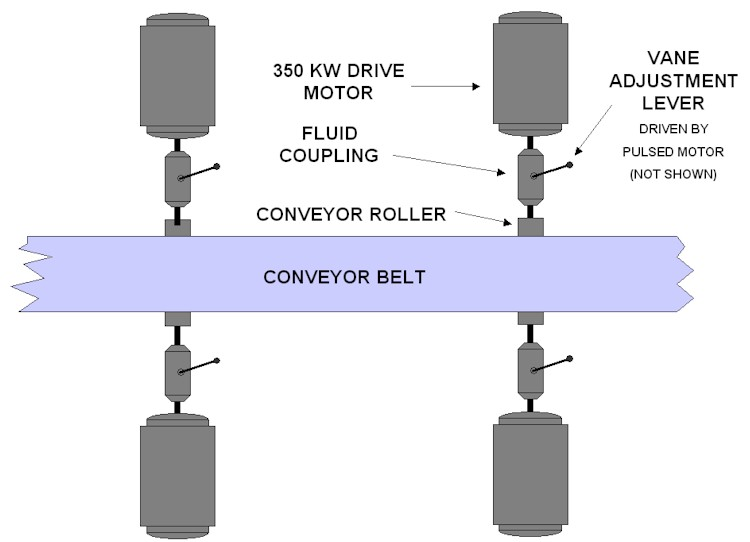
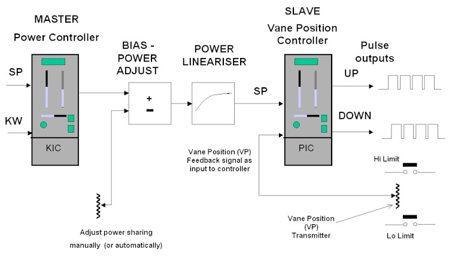

|
| [Home] [About us] [Contact us] [Training] [Optimisation services] [Protuner] |
| [Loop signatures] [Case histories] [Continuous loop performance monitoring] |
|
Control Loop Case History 89 CONVEYOR START-UP PROBLEMS I was recently in a plant which is having problems with controlling the start-up of several large conveyors each of which are driven by several large motors. I was asked for advice, and the following is taken from my report to the client. Description of Control Systems (Refer to Figure 1)  The control system on each conveyor was designed to facilitate the start-up of a conveyor without causing excessive stress and overheating on the drive motors. Each conveyor has three or four drive motors, some of them being in pairs which are hard-coupled by a drive shaft; the motors in a pair being on either side of the conveyor. A fluid coupling connects each motor to the conveyor drive roller, its purpose being to allow the motor to take up the load at a relatively slow ramp rate. The fluid couplings are the type which effectively consist of two concentric cylinders, the one driving the other at a speed which is dependent on the amount of oil between the cylinders. "Scoops" or vanes (as I will call them hereafter), which are positioned by a vane guide arm, regulate the flow of oil into the space between the cylinders. The vane guide arm is positioned by an actuator which is a reversible electric motor driven by pulses in the one direction or the other. A controller block in a well known make of PLC has been specially designed to drive normal electric actuators was used for the control. The PV input to the controller is motor power in KW. The setpoint input is from a ramped programme written in the PLC. The outputs from the control block are directly in "raise" or "lower" pulse trains. There is no position feedback signal of vane arm position, and there are no end-limit switches to stop the drive at when the arm reaches its end positions. The client was having many problems with this control system, and it seemed to need retuning very often. There were many complaints about it from operational staff. Problems Encountered with Existing Set-up 1. Fluid Coupling Problems Probably the worst problems are with the set-up of the fluidic coupling. The purpose of any final control element (FCE) is to "translate" what the controller wants into the actual physical input into the process, which in this case is power. If it cannot do what the controller asks it, then the controller has to try and correct for its shortcomings, as well as to try and control the actual process. Unfortunately the controller is tuned for the dynamics of the actual process, and it cannot handle the problems encountered with the FCE very well, which will make the control poor. Fluidic couplings are notorious for problems which include, hysteresis, deadband, and non-repeatability, particularly if the oil level in them is not kept constant. The latter in particular is very important, as it means that the dynamics of the coupling change with differing oil levels. It must be noted that the controller which controls the position of the vanes in the coupling can only normally be tuned for one particular set of dynamics of the coupling. If these change one has to retune the controller. Apparently various people, including some not in the automation and control department, are frequently working on the couplings, refilling oil, and readjusting the vane mechanical limits. This is unacceptable for good control. Another major problem is that the vane lever position is not measured, so that the controller cannot know its true exact position - see also below. There are also no limit switches on the vane lever to stop its drive motor from trying to move it out of limits. Another bad problem in the control of the power is that the vanes only start taking effect and allow the motor to start putting power into the drive when the vanes have moved considerably from the bottom limit - apparently as much as 80% on some units. The result of this is that there is a considerable period of deadtime when starting the drives and ramping up the power setpoint, before the vanes start taking effect. A final problem is that it appears that the relationship between vane position and power is probably very non-linear. 2. Motors with Differing Characteristics It appears that in some instances different drive motors are used on the same conveyor, even with different power ratings. This is definitely not good practice. Ideally motor characteristics should be matched as closely as possible for all motors on a particular conveyor. They need this to share the load as equally as possible. 3. Controller Problems The PLC control block which was used, and as mentioned earlier, has been specially written for control systems like this with pulse outputs. Unfortunately there are some severe drawbacks in this block particularly when there is no actuator position feedback signal, which makes scientific tuning almost impossible. The PLC manufacturer themselves in the manual state that the control is "approximate" as the controller has to "simulate" the actuator position. The manual on this controller is also impossible to understand. Even some of the parameters are given in a foreign language. It is very unlikely that anyone apart from experts in the company manufacturing the PLC, which is overseas, would really be able to fully understand this controller. A lot of the features in the controller are blocked from user input and one cannot make adjustments. Recommendations 1. Fluid Coupling
2. Main Conveyor Drive Motors
3. Control Strategy (Refer to Figure 2) 
This proposed new system will definitely be far more effective and stable than the existing one, provided it is implemented correctly. Michael
Brown is a specialist in control loop optimisation, with many years of
experience in process control instrumentation. His main activities are
consulting, and teaching practical control loop analysis and
optimisation. He gives training courses which can be held in clients'
plants, where students can have the added benefit of practising on live
loops. His work takes him to plants all over South Africa, and also to
other countries. He can be contacted at: |